Best Practices With Git/GitHub
Sagar Sapkota
 /sgrspkt
/sgrspkt
A bit history & Introduction
- Developed by Linus Torvalds in 2005
- Was developed first to maintain version control of Linux kernel
GIT
- With distributed architecture, Git is an example of DVCS
GitHub
- Git repository hosting service
Why Version Control Needed ??
- Work together and collaborate on a single project
- Revert files to previous state
- Revert entire project back to previous state
- Compare changes over time
- See who modified what ? And much more….
Agendas
- Installing Git
- Introduction to Version Control
- Git Basics
- Creating a new local Git repository
- Cloning a Git repository
- Making use of Git commit history
- Reverting files to previous state
Agendas Cont..
- Creating a Github Repository
- Adding, Committing & Pushing changes
- Branching
- Merging Branches
- Sending Pull Request
- Stashing & Pop
- Github pages
Installing Git
git-scm.com/download/win
git-scm.com/mac
sudo apt-get install git (Ubuntu)
sudo yum install git (Fedora)
git --version
First Time Git Setup
git config --global user.name "Sagar Sapkota"
git config --global user.email "sagarsapkota@ebpearls.com"
git config --list
git config user.name
git help
Git: The Big Picture
Use Cases:
- Individual development
- Collaborative development
- Offline usage
Why Git ?
- Everything is local (full history tree available offline)
- Everything is fast
- Snapshots
- It is distributed not centralized
Git workflow: The three states
In a Git repository, file can reside in three main states:
- Modified
- Staged
- Committed
What does this mean ??
Create a github repository
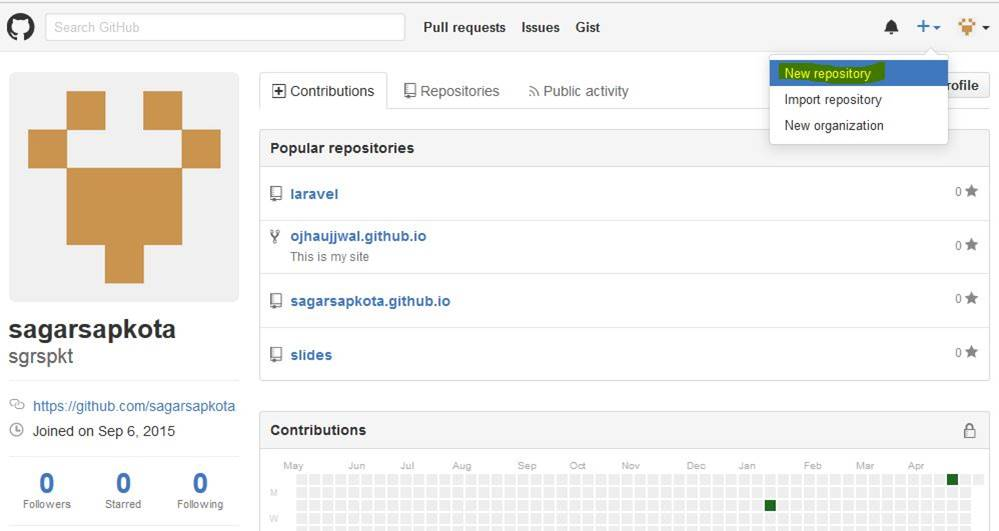
Basic Snapshotting
- To show summary of untracked, tracked, to be committed, etc. files
- Modify composer.json and type
git status
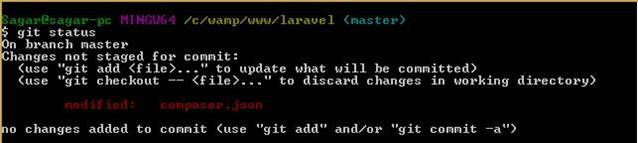
Add new files to staging area
git add (filename)
git add .
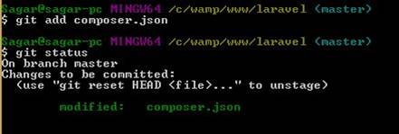
Commit your changes
git commit –m “commit message”
You can directly add and commit
git commit –a –m “commit message”
it's a standard git practice to add message as a command and not in past tense
If u want to remove the file from staging area but want to keep in working directory then use :
git rm --cached (file_name)
Rename file. Changes test.txt file to test
mv test.txt test
Commit Message
- Master :- You are in master branch [we see later on branching ]
- 4544ec71 :- Unique identifier that HEAD of commit holds
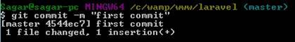
Get Git Commit History
You can study repository history using
git log
You can see last ‘p’ number of commits
git log –n p
You can also see git history with affected files [detailed]
git log –stat
Commit History Cont..
Limit the commits to those made after the specified date.
git log --since 1.days
Git log --after 1.days
To see a compressed log where each commit is one line
git log –pretty=oneline
Compare Changes Over Time
See changes in a commit
git show commitID
Compare two commits by
git diff commit1ID commit2ID
Revert Files To Previous States
Reset staged file
git reset HEAD (file_name_that_was_staged)
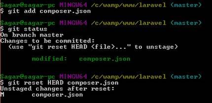
Commit Recover
Wrong commit can be recovered, opens file in your configured text editor
git commit –amend
Pushing Changes
To send changes to your remote repository execute
git push origin master
You can also push to a branch other than ‘master’
git push origin branch_name
BUT WAIT
- What Is Origin ?
- What Is Master ?
- What Is Branch ?
Origin
When you clone a repository for the first time “Origin” is a default name given to the origin remote repository that you clone, from where you want to pull and push changes
git clone /path/to/repository
On initializing new repository
git init
git remote add origin /path/to/repository
git remote add (remote_name)
git remote remove (remote_name)
You can fetch from others remote and merge to your own
git fetch (remote_name)
Push skeleton
git push (remote_name)(branch_name)
View all remotes available
git remote -v
Want to know about remote
git remote show (remote_name)
Rename remote name
git remote rename (old) (new)
Branching
Branches are used to develop features isolated from each other. The master branch is the “default” branch when you create a repository. Use other branches for development and merge them back to master branch upon completion.
"Branches are just pointers to commits."
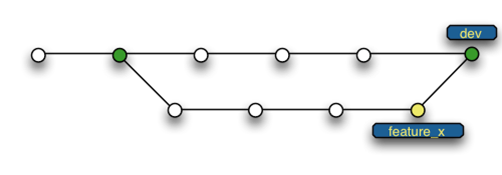
To create a new branch
git branch (new_branch_name)
Switch to a different branch
git checkout (other_branch_name)
To show all branches
git branch
To delete a branch (locally)
git branch –d (branch_name)
To delete a branch (remotely)
git push origin --delete (branchName)
Merging Branches
Checkout the branch you want to update
git checkout (branch_name)
Then merge branches by executing
git merge (this_branch_name) (that_branch_name)
Fork A Repo
A fork is a copy of a repository. Forking a repository allows you to freely experiment with changes without affecting the original project.
Purpose changes to someone else's project:
- Fork the repository.
- Make the fix.
- Submit a pull request to the project owner.
- If the project owner likes your work, they might pull your fix into the original repository!
You can now clone the repo and get all files and folders to your local directory.
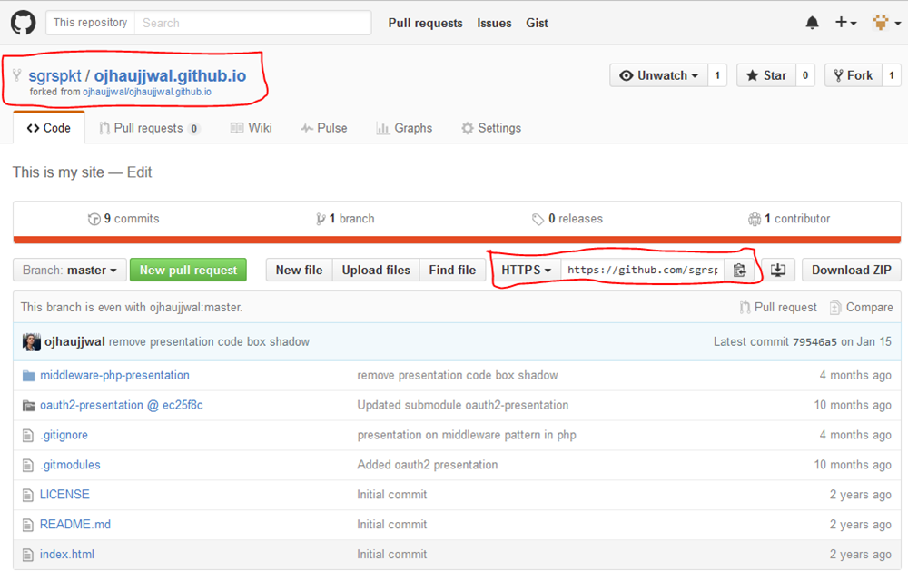
Add Collaborators
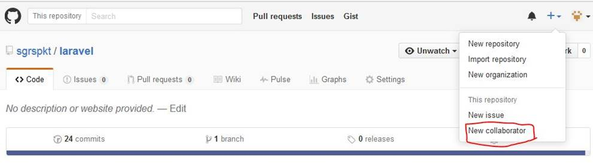
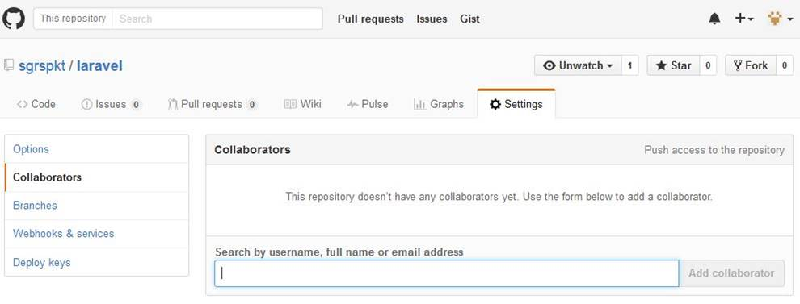
Create Pull Request
Create a pull request to propose and collaborate on changes to a repository.
Steps involved :
- On GitHub, navigate to the main page of the repository.
- To the right of the Branch menu, click New pull request.
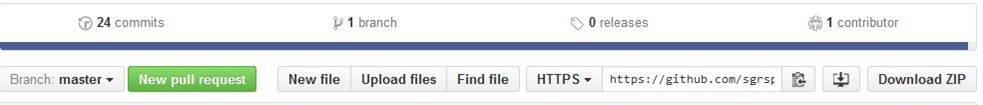
- The Compare page will automatically select the base and compare branches; to change these, click Edit.
- On the Compare page, click Create pull request.
- Type a title and description for your pull request.
- Click Create pull request.
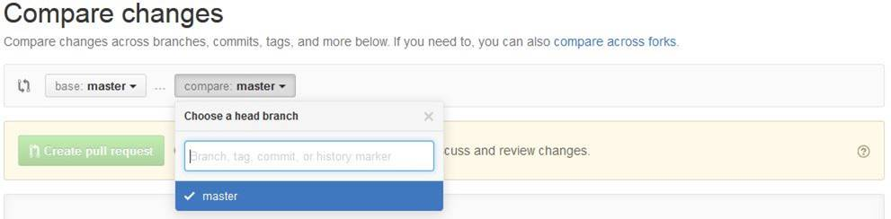
git aliases
Git alias is used so that we may not type the entire text of each of the Git commands
git config --global alias.co checkout
git config --global alias.br branch
git config --global alias.ci commit
git config --global alias.st status
git stash
Why you use git stash ??
Save stash
git stash save “appropriate message what you have worked on”
Show stash list, Stash name is like this : stash@{0}
git stash list
This takes back to original but doesn’t delete stash
git stash apply (stash_name)
Stash list will delete and is back to original stage
git stash pop
GitHub Pages and Slides
Github pages can be created by creating github repo as.
username.github.io
index.html behaves as homepage
Eg : sgrspkt.github.io
References
- https://git-scm.com/docs/
- http://www.slideshare.net/akrish/introduction-to-gitgithub-a-beginners-guide
THANK YOU !!
ANY QUESTIONS ??